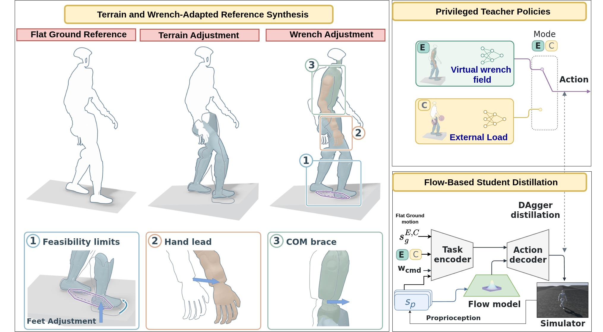
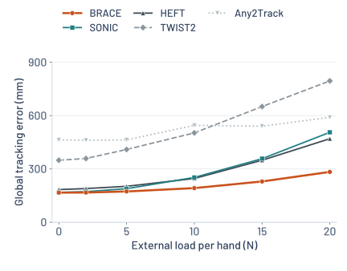
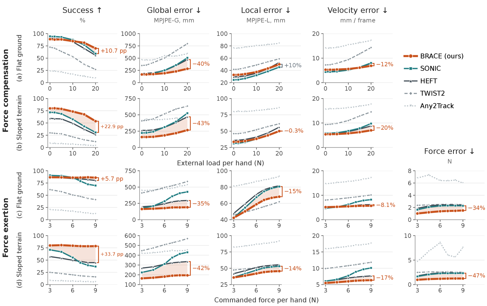
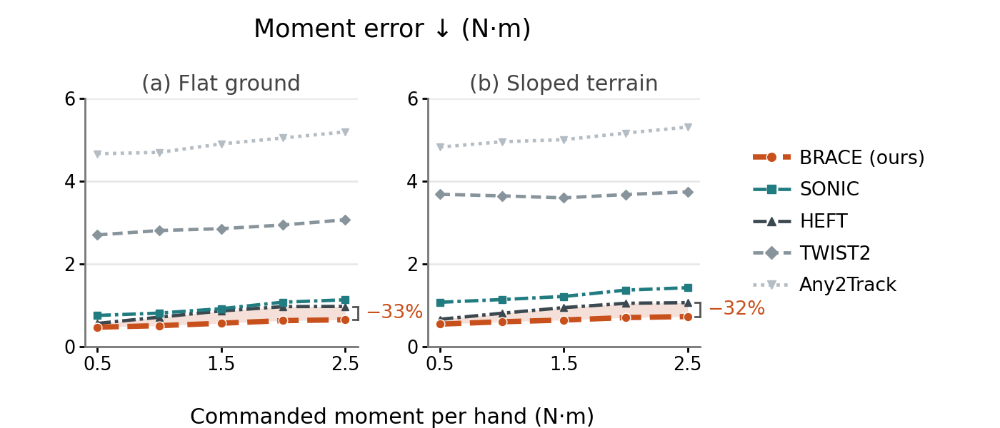

BRACEAdapting Whole-Body References for Force and Terrain Aware Humanoid Motion Tracking
1Multiply Labs2Brown University3University of New Mexico
Force- And Terrain-Aware Whole-Body Control.
Force Compensation.
Squatting, then walking up the ramp with a 3.5 kg kettlebell.
Repeated barbell curls on outdoor terrain.
Carrying a barbell while walking up an outdoor ramp.
Rowing a 3.5 kg kettlebell on flat ground.
Squatting and rising under a 3.5 kg handheld load.
Barbell rotation on flat ground.
Force Exertion.
Commanded hand force for insertion at a tabletop fixture.
Squatting while exerting hand forces of up to 9 N.
Measured hand force during a 9 N command.
Pushing a cart across ramps with a flat-ground reference.
Torque Exertion.
Hand-torque exertion to rotate a winch and a screw.
Applying right-hand torque to turn a forklift winch.
Baseline Comparisons.
Left: SONIC · Right: Ours
Lifting an object under load.
Tracking a flat-ground reference across a ramp.
Hand-force exertion against a 2 kg resistance band.
Lateral force exertion against a 2 kg resistance band.
Autonomy, Interaction, And Teleoperation.
Autonomous banana transfer with a fine-tuned VLA policy.
Directional commands guide the robot across ramps.
Lifting a barbell with an operator about 1,000 miles away.
Slope traversal with an operator about 1,000 miles away.
Reference Transformations.
From Flat-Ground Motion To An Adapted Reference.
Method animationStart with a flat-ground pickup trajectory: the input motion in the left panel of the method figure.
Method Overview.


Teacher training and student distillation
Terrain- and wrench-adapted references.
Terrain conformance lifts footholds and root onto the local surface. For exertion, a wrench transformation resolves the hand displacement that produces the force together with the center-of-mass and center-of-pressure shifts it induces, bounded by arm-effort limits.
One teacher per interaction mode.
Teacher-E learns to exert force under a virtual wrench field while tracking the wrench-adapted reference. Teacher-C learns to compensate an external wrench while tracking the terrain-adapted reference.
One policy, proprioception only.
DAgger distills both teachers into one student. A task encoder reads the flat-ground goal, the mode and the wrench command; a flow-matching base models the action distribution from proprioceptive history; an action decoder fuses both.
Read the abstract
Whole-body tracking has become the interface through which operators drive humanoid robots, yet the references it consumes are recorded on level ground and carrying nothing, so the tracker is aware of neither the forces the robot must exchange with objects nor the terrain it must stand on. Existing controllers address one side of this gap: force-capable policies command an end-effector force but prescribe no whole-body pose, while terrain-adaptive trackers treat loads as disturbances to reject rather than wrenches to command.
We present BRACE, a whole-body tracker that exerts and compensates commanded hand forces from diverse poses while following a flat-ground reference on sloped terrain. Rather than leaving the tracker to absorb the load and the slope, BRACE folds both into the reference it follows: terrain conformance lifts footholds and root onto the local surface, and a wrench transformation resolves the hand displacement that produces a force jointly with the center-of-mass and center-of-pressure shifts it induces, bounded by teacher-specific arm-effort limits.
Separate exertion and compensation teachers are distilled by DAgger into one flow-matching student that runs on proprioception alone, without a height map or measured wrench, so a teleoperator (even in remote locations) can supply a flat-ground trajectory and the robot resolves slope and load onboard. We conduct extensive experiments on the Unitree G1 to demonstrate the ability of BRACE to exert and compensate force and handle diverse terrain in simulation and real robot experiments.
Quantitative results Compare tracking, success and hand-force accuracy
Tracking and force accuracy across loads and terrain.
Simulation on held-out PHUMA and Bones-seed motions.
Global tracking error
Lower is better.

Full plots, comparison table and evaluation details
Each point averages the PHUMA and Bones-seed test splits equally where values are available. Methods receive the flat-ground reference without terrain information. Global tracking error is MPJPE-G; force error is the reported mean absolute per-clip force bias.
Success combines the recorded height/orientation checks with a position-error criterion: mean torso horizontal drift ≤0.5 m on flat ground, or mean global body error ≤0.35 m on terrain. Terrain results use the recorded evaluation horizon, including the five-second cap in Bones-seed runs.


| Setting | Load per hand | Success | Global error | Force error |
|---|---|---|---|---|
| Compensation, flat ground | 20 N | +10.7 pp | −40% | – |
| Compensation, sloped terrain | 20 N | +22.9 pp | −43% | – |
| Exertion, flat ground | 9 N | +5.7 pp | −35% | −34% |
| Exertion, sloped terrain | 9 N | +33.7 pp | −42% | −47% |


Citation.
@article{harithas2026brace,
title={BRACE: Adapting Whole-Body References for Force and Terrain Aware Humanoid Motion Tracking},
author={Harithas, Sudarshan and Yu, Chen and Borbon, Juan and Mondal, Shubhankar and Zha, Winston and Sridhar, Srinath and Zhang, Dingqi and Wang, Jiuguang},
journal={arXiv preprint arXiv:2610.07052},
year={2026}
}